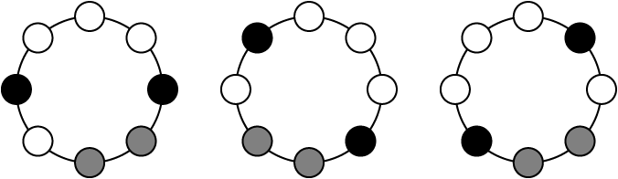
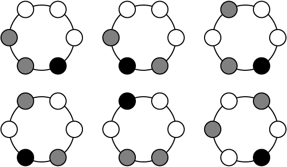

Problem C - Necklace
Once upon a time, three girls - Winnie, Grace and Bonnie - owned a large number of pearls. However, each of them only had a single color of pearls. Winnie had white pearls, Grace had grey pearls and Bonnie had black pearls. One day, after a long discussion, they decided to make necklaces using the pearls. They are interested in knowing how many patterns can be formed using a certain number of pearls of each color, and have asked you to solve this problem for them.
Note that rotating or flipping over a necklace cannot produce a different kind of necklace. i.e. The following figure shows three equivalent necklaces.

The following figure shows all possible necklaces formed by 3 white pearls, 2 grey pearls and 1 black pearl.

Input
The input begins with an integer N (≤ 2500) which indicates the number of test cases followed. Each of the following test cases consists of three non-negative integers a, b, c, where 3 ≤ a + b + c ≤ 40.
Output
For each test case, print out the number of different necklaces that formed by a white pearls, b grey pearls and c black pearls in a single line.
Sample input
2
3 2 1
2 2 2
Sample output
6
11
Problem setter: Cho
Special thanks: Michael (for making up the story)
Source: Tsinghua-HKUST Programming Contest 2007